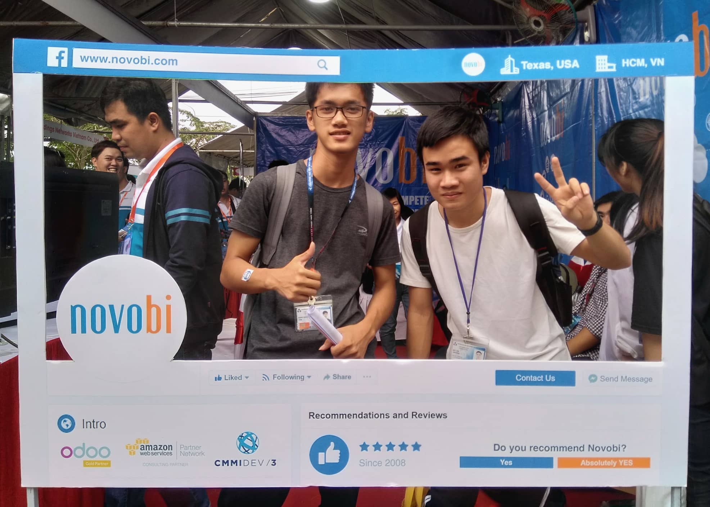
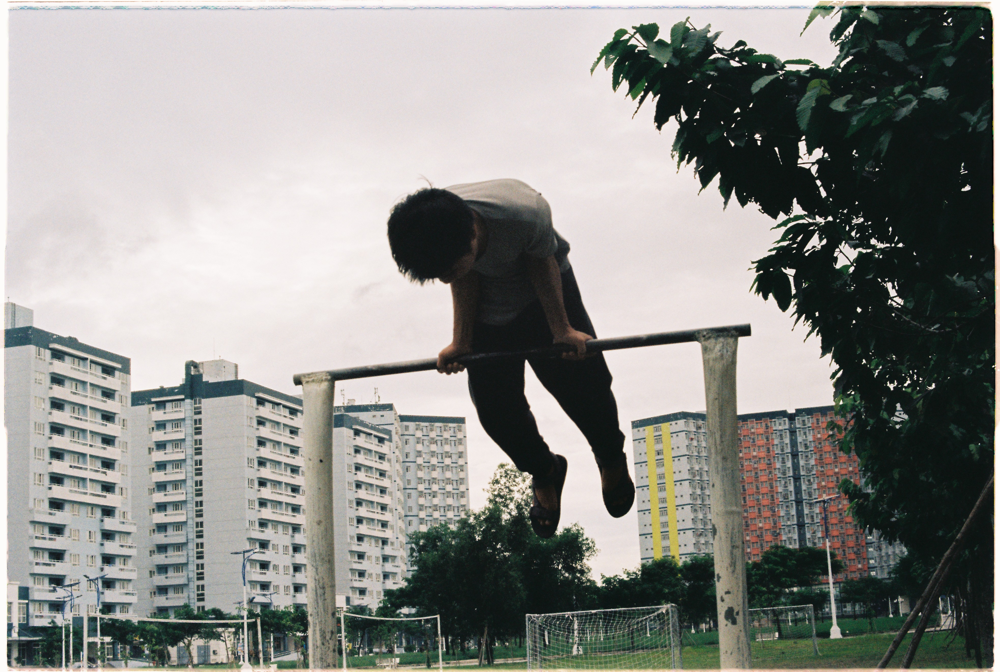
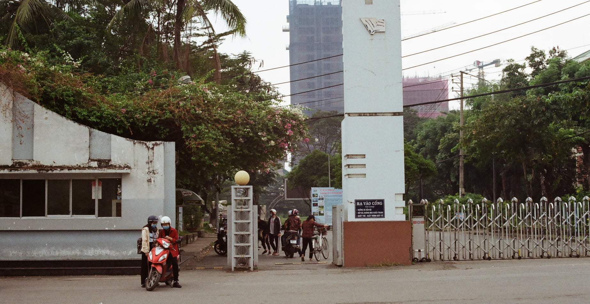
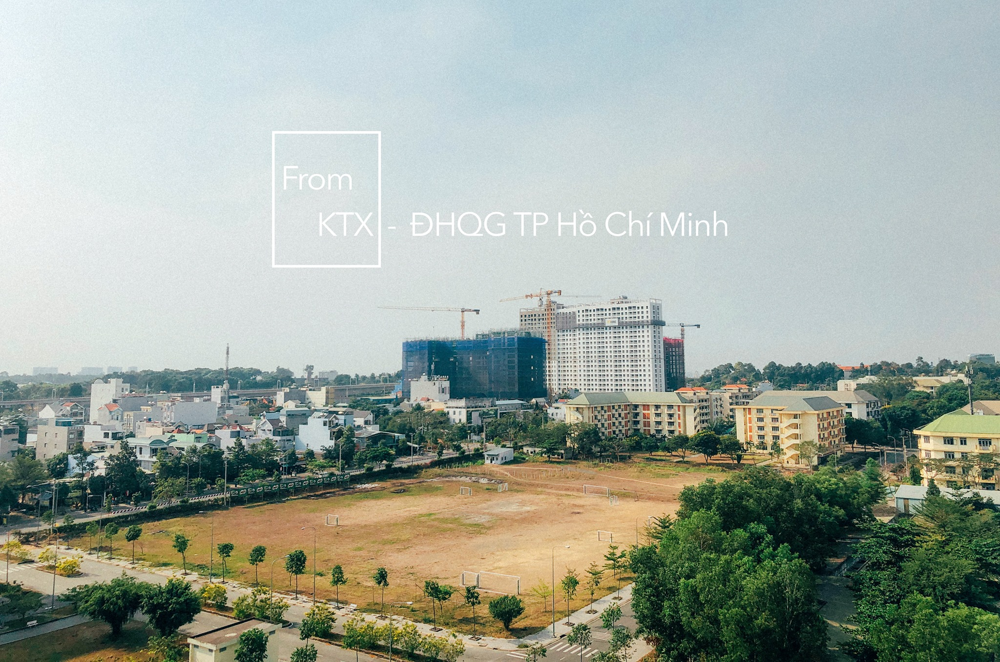
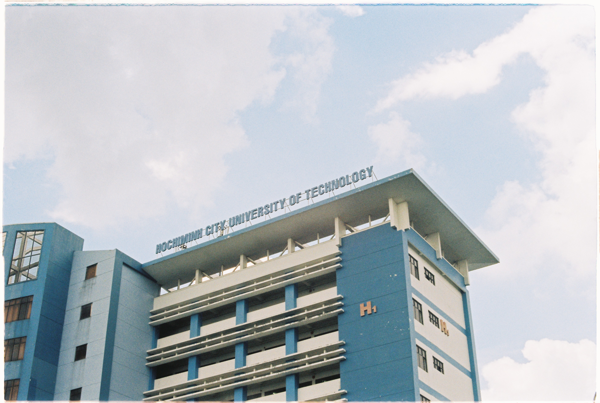

Tháng 8
Hôm nay trời mưa rả rích, thời tiết này lại làm mình nhớ về Huế. Ừ thì cũng trùng hợp thay, tầm thời gian này 7 năm trước, mình đã rời Huế để vào thành phố Hồ Chí Minh học đại học, thời gian thắm thoắt thoi đưa, 7 năm mà như 1 cái ngoảnh đầu vậy...
Sáng hôm đó ở Huế tiết trời lạnh lạnh, có chút ảm đảm. Ba mẹ thuê xe 4 chỗ để đưa mình vào ga Huế, ngồi trong xe thấy vài giọt mưa lất phất qua cửa kính. Lần đầu tiên bước ra khỏi thành phố này mình đi với ông ngoại, nhân tiện để ông vào Nam thăm 2 cậu ở trong này.
Không khí ở ga cũng nhộn nhịp, có nhiều bạn cũng bắt đầu vào nhập học giống mình. Vào lúc đó, tàu hoả là phương tiện phổ biến đối với các chặng đường dài, về độ an toàn và chi phí thì có nó khá ổn so với các loại phương tiện khác, an toàn hơn xe khách và rẻ hơn máy bay.
Sau vài lời dặn dò của ba mẹ thì tàu cũng lăn bánh, cảm xúc lúc đó của mình cũng phức tạp, háo hức, lo sợ,... đều có cả, nhưng đặc biệt hơn là thấy mẹ mình rơi nước mắt vì lần đầu tiên con trai xa nhà.
Mình với ông ngoại chọn loại ghế ngồi mềm, thời gian di chuyển tầm cỡ 20 tiếng, ngồi cùng hàng ghế của mình còn có 1 bạn ở Quảng Trị đi cùng bới bố, sau vài câu chào hỏi thì cũng biết rằng bạn đó học chung khoa với mình. Từ đó cho đến mấy năm đại học, mình có gặp lại bạn đó vài lần, và thật tình cờ là mình với bạn đó chung hội đồng lúc bảo vệ luận văn, nghĩ lại cũng thấy nhân duyên lòng vòng thật :").
Rạng sáng hôm sau thì tàu tới ga Sài Gòn ở quận 3, anh họ (con cô cậu, ở quê mình người lớn hay gọi như này, còn có mấy tên khác như anh em bạn dì, chú bác :v) ra đón ông với mình, 3 người ăn sáng ở ga, lúc này có 1 điểm mình bị sốc là không có nước lọc để uống, phải mua :), đồ ăn thì cũng không hợp với mình lắm, tới giờ chắc vẫn vậy.
Sau đó 3 người thuê xe qua trường Bách khoa ở quận 10 để làm thủ tục nhập học, tới cổng trường thì anh với ông ngoại mình về Bình Phước, mình nhập học 1 mình, nghĩ cũng liều đó chứ :D. Lúc đó đang nở rộ các hoạt động đa cấp lừa đảo, mình mới ngồi nghỉ ngơi một tí thì có 1 người tiếp cận mình hỏi han, mà mới hỏi vài câu cơ bản thì ảnh được một thầy mời lên uống nước 😅.
Cái trường gì mà to khinh khủng, từ cổng đến chỗ nhập học phải đi 1 lúc mới tới, mấy anh tình nguyện viên thấy mình mang vác túi xách nặng quá nên cũng giúp mình mang bớt. Sau đó ra cây ATM trước cổng trường rút tiền, loay hoay một hồi nó nuốt luôn cái thẻ :))), vậy là phải chờ tới giờ ngân hàng mở cửa, mình chạy qua chi nhánh của Vietinbank để rút tiền bằng chứng minh nhân dân.

Làm thủ tục gần xong thì Lam Trường lên nhập học, giới thiệu qua về Trường thì mình quen bạn hồi lớp 10 ở 1 lớp học thêm, ấn tượng đầu tiên là bạn quá giỏi và tốt tính :))). Trước đó thì 2 đứa hẹn nhau nhập học, tụi mình học chung khoa, thằng bạn này của mình cũng đi 1 mình, tuy nhiên Trường có kinh nghiệm ra vào SG nhiều lần rồi, hôm đó bạn còn chạy xe máy từ nhà người quen qua. Xong xuôi thì Trường chở mình về ở ké chỗ đó vài ngày để chờ kí túc xá mở cổng đăng kí. Tụi mình có chụp ảnh chung lúc mới vào SG ở Bách khoa nhưng hình ảnh đó chắc chỉ còn trong kí ức vì điện thoại bị hư rồi. Ảnh dưới mình chụp chung với Trường lúc tham gia hội chợ việc làm đầu tiên ở BK.

Lúc ở nhà người quen của Trường thì có thêm 1 điều làm mình bị sốc trong những ngày đầu ở SG nữa, lúc ăn cơm thì chỉ có mình ăn cơm nhiều và đồ ăn ít, tầm chưa tới 1 phút là mình làm xong 1 chén cơm rồi 😅, 2 bác chủ nhà nói thông thường họ ăn đồ ăn nhiều hơn cơm, mỗi bữa 1 chén cơm thôi, hôm đầu tiên đó bác không biết nên nấu ít cơm, ngược lại thì mình ở quê chủ yếu là ăn cơm, chủ yếu ăn để no bụng.
Sau 1 2 ngày ở SG thì mình bắt đầu cảm giấy nhớ nhà rất nhiều và cũng thấy hơi hoang mang :"), đúng là cái gì cũng cần thời gian... Mấy ngày đầu mình tham gia một vài hoạt động sinh hoạt đầu khoá của trường, được đi địa đạo Củ Chi, chui hầm :v, đó cũng là lần đầu tiên và duy nhất mình đi cho đến nay.
Sau đó 1 tuần thì 2 thằng bắt đầu về đăng kí ở kí túc xá, từ quận Tân Phú về Thủ Đức trên chiếc xe số 30, xe này tính ra cũng phải lớn nhất trong số các loại xe buýt ở SG rồi, hôm đó đi cả quảng đường tầm 30km thì 2 thằng bao xe luôn. Kỉ niệm đầu tiên với xe buýt SG là dòng chỉ dẫn "Lên xe cửa trước, xuống xe cửa sau" 😅, 2 đứa đứng ở cửa trước ngơ ngác, thắc mắc vì sao bác tài không mở cửa, sau 1 lúc ổng không thấy 2 đứa tới cửa sau thì bắt đầu la :v. Đi xe buýt thì có trợ giá cho sinh viên, hồi đó 1 vé 2 ngàn, đi được gần 30km 😎.
2 đứa tới được kí túc xá thì cũng chiều chiều rồi, khu A hết chỗ :"), nên qua khu B, ở chung phòng. Ở được 1 kì thì Trường chuyển qua khu A, sau đó mình cũng chuyển, chuyển đi chuyển lại 1 vòng thì 2 đứa ở chéo phòng nhau ở toà AH 😂.

Ảnh cổng ktx khu A, đối diện là trường của mình, đi bộ qua đường là tới :v.

Một góc nhìn từ phòng của mình.

Và thế là hành trình 4 năm ở Bách khoa của mình bắt đầu...

Nhân một ngày mưa vào cuối tuần mình hơi hoài niệm một tí thôi... nào rảnh rỗi chắc mình lại viết thêm 1 vài kỉ niệm ở nơi đây.